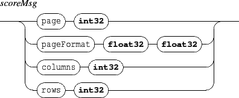

Next: 11.3 Score queries
Up: 11. Score specific messages
Previous: 11.1 Specific score mappings
Contents
Index
11.2 Score browsing and layout

- page: sets the first displayed page. Index starts at 1. Default: 1.
- pageFormat: sets the score's page format, in cm (Warning: the pageFormat is not used when another page format is 'hard-coded' in the score's Guido code). Default: (21.0 , 29.7).
- columns: as multiples pages can be displayed and organized in a grid of pages, columns sets the number of columns in the grid. Default: 2.
- rows: as multiples pages can be displayed and organized in a grid of pages, rows sets the number of rows in the grid. Default: 1.
Grame - Interlude project [ANR-08-CORD-010]